webflow
tips and tricks
- make a class for paragraphs
-
paragraphs line height is 0 by default, as a quick fix a set it 1
em and I don't know if this is right
-
margin center an element
on the top of the box model showing the marign and the padding
of the element you can find a button that sets the right and the
left margins of the elmenet to auto which centers it
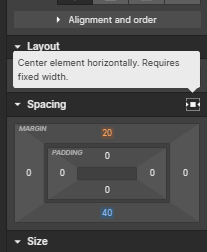
-
adjusting margin and padding multiple directions at once
to adjust to opposed directions of the padding or the maring
hold alt while moving your cursor
and to adjust all directions at once hold
ctrl
-
konw from where the property is inhertied
if a property name is light orange it means it's inherited if
you click on the property name it will show the element which
your selected element has inhertied the property from and beside
the parent element you will also see an icon for the breakpoint
where the property was set; for example if you change the font
size on mobile landscap then go to the mobile portrait and click
on font size you will see the mobil landscape icon beside the
name of the element from which the selected element inherit from
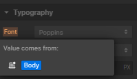
-
collapse or expand all
in the navigator you can collapse or exapnd all the elements in
the navigator by clicking the two-arrow icon on the top right of
the navigator
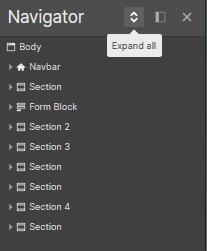
-
adding elements by command line
ctrl + E to open the command line then
type whatever element you want press enter and it will be added
at the current selected element
-
add variable color
click on the color in the styling panel, then at the bottom left
you will find a plus icon click on it and it will add the color
and let you choose the name of it
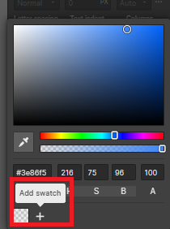
-
adding grid withing grid
if you try to just drag a grid elmenet inside one of the cells
of another grid element the editor will repalce the cell with
the new grid element to overcome that
ctrl(hold) + drag and then the editor
will allow you to place the new grid element inside the cells
add google fonts
- click on the "w" icon from the top left
-
click on site settings
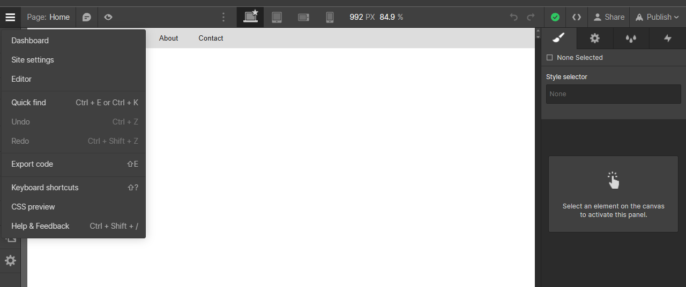
-
from the upper bar choose fonts
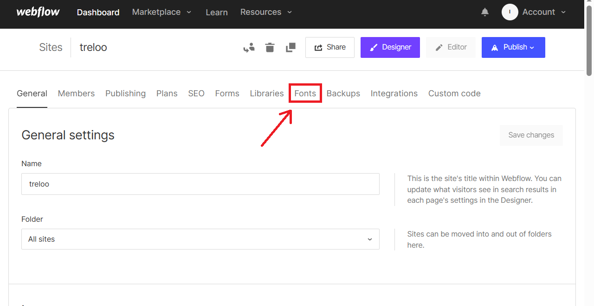
-
type the font you want, press enter and choose the variants you
want
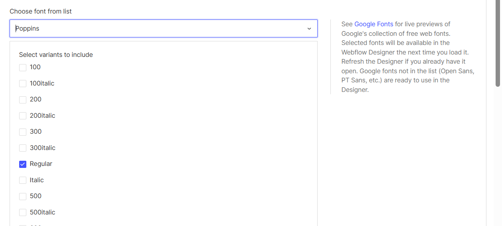
-
finally click add font at the bottom and the font will be added to
the font list in webflow editor
adding font icons to webflow
- download the files of the library
-
upload the font files (.woff, .woff2, etc...) from the site
sittings on webflow (to know how to add fonts go to adding google
fonts to webflow section)
- go back to the designer of webflow
- add text block
-
copy the icon glyf
like in font-awesome:
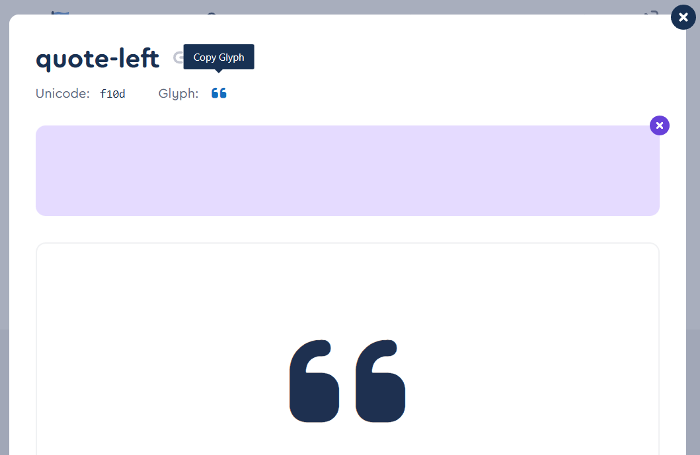
in case of fontello you find in a comment on the side of the
unicode of the icon in the fontello.css file
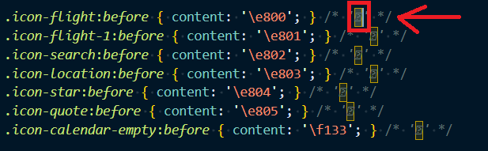
note they are in the form of ? as the computer doesn't have
fontello font on it
- paste the glyph in the text block
-
set the font family of the text block to the font you uploaded
(awesome, fontello, etc...)
animation
to add an animation
- select the element you want to animate
-
click on the thunder icon on the right panel at the end of the
line of style icon
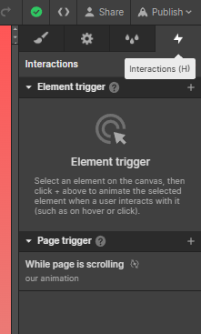
as you can see there are two types of triggers: element trigger
(like mouse click, mouse hover, mouse over element, scroll into
view, and while scrolling in view)
-
click on the plus icon beside the type you want to show you the
optoins and choose the option you want
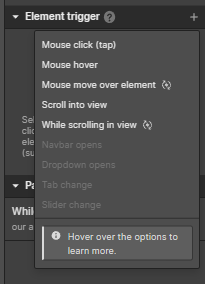
-
the follwing dialog will appear
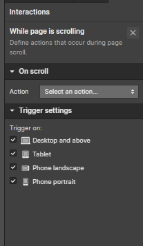
click on select action drop menu to
choose action
some times there are actions like fade in and fade out, etc...
and some other time the only aciton is custom animation
-
if you choose custom animation (say we chose the custom
animation in page scroll in the page trigger type), additional
line will appear (scroll animations) showing you the animations
you already have (our animation) and offering you to add another
animation by clicking the plus icon beside the scoll animtion
word
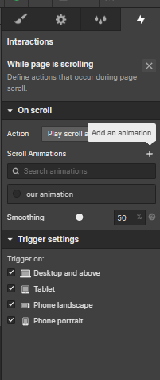
click it to add a new animation and choose a name for it
-
now you can choose actions to animate from the plus icon beside
the (scroll actions) word
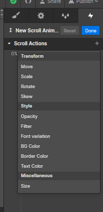
-
once you choose the action you want two keyframes will appear
one at 0% and the other at 100%, you can drag them along the
timeline to choose where every keyframe starts
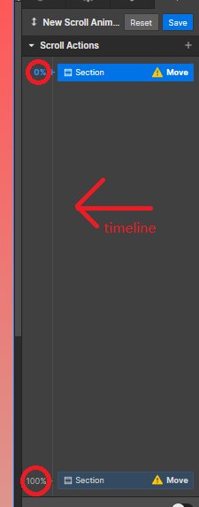
as long as there is a yellow triangle on a frame it means
there's something wrong with and sometimes hovering over the
triangle can help you solve the problem
-
under the timeline you find the other options of the action
when adding an animation make sure that you're using the same unites
in both the starting and the ending animation
like in the move animation if you use vh in the x-axis in one of
them you'll have to use vh in the x-axis in the other one other wise
it keeps showing you the yellow triangle
audits
to show the audits panel clikc on the check icon on the far left
bottom corner of the screen
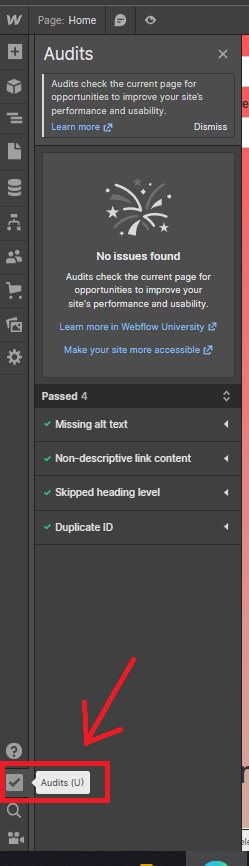
sometimes you passed all the audits like in the image above and
sometimes it will show you the errors like the image below:
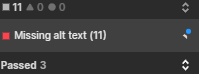
click on the arrow on the right of the error to show you the
elmenets that have that error
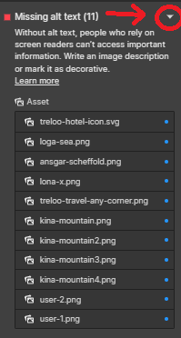
when hover on the element two options will show on the right
- show me how to fix it which is the arrow icon
- ignore this which is the slashed bell icon
if you click ignore this the element will be added in the ignored at
the bottom of the elements
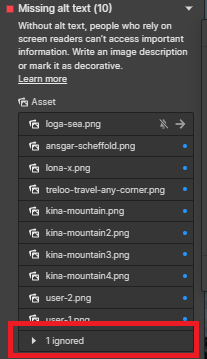
you can remove an element from the ignored by openning the ignored
list, hover on the element click on the bell icon and it will be
added back to the error element list
adding alt (alternative) text to images
-
one way to add alt text is to go to assets panel on the left
colmun of the desginer, hover over the image and click on the
gear icon on the top right corner of the image, then add the
description you see fit
this way can be practical in case you're using the image in
multiple place in the website as all the images will have an alt
text at once
-
another way to do it is to change the alt text for a specific
image by clicking on the image in the website, click the gear
icon that shows at the top of it, click the alt text drop down
menu, and then choose custom description
of course this way will change only this sepcific image you
selected
-
he talked about adding alt text to a rich text and I don't
understand that for the moment
- then he talked about cms and I didn't dig deep in that too
-
he also talked about adding alt text to multi image field in cms
so when the image is considered decorative ? if the image is an icon
or icon-like, like if you showing stats and numbers; it doesn't add
meaning to the content of the website
vision preview
to open vision preview panel click on the screen size beside the
different screens that are at the top of the designer, then find the
vision preivew section in the menu then choose the option you want
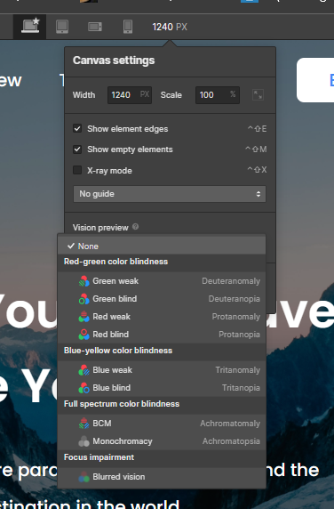
states
to set styling for the different states of an element click on the
small down arrow icon beside the class list of the element in the
styling panel and you will see the different states like hover focus
and focus keyboard
the difference between focus and focus(keyboard) that focus is
applied either if you click the element, tap on touch screens or
press tab on the keyboard and it uses the css selector
:focus while the focus(keyboard) is only
applied when selecting elements with the keyboard tab and uses the
css selector :focus-visible I recommend you
to read
MDN article
about it
it can be useful in setting the outline of the elements when tab
focused in order to enhance accessability
figma to webflow
an extention that can be added to figma you better look that up
unitless proberites
to set a unitless number like in line height in the typography
section of the element style you simply add hyphen after the number
- like if you want the line height to be 1
you type 1- and that sets the line height the same as the font size
text blocks vs paragraphs
according to
webflow university
text blocks should be used when using any other element is not
logical in that situation like the copyright text at the footer we
shouldn't use a paragraph for that I just found out this info right
now
A text block is a generic text element, best used for text that
isn't a heading, paragraph, or link. A good example of this would
be a copyright notice.
text blocks are just divs with text in them this should help you
understand how to use them but now since we just found out there are
places where paragraphs are not suitable where else shouldn't use
paragraph
adding a new break point
to add a new break point:
-
click on the three dots beside the screens (break points) at the
top of the designer
-
choose the break point you want from the drop list that's gonna be
showed
duplicate class
if you right click a class in the style selector section in the
style panel and click duplicate it will allow you to make a whole
new class but with the same styling as the class you just
duplicated, which makes you able to change one thing or two things
without affecting the original class
blending
in
figma to webflow
tutorial the instructor found that one of the images (plane view of
three bottles) had a different color than the background and he
wanted it to look like a png (just the bottels without the color) so
he selected it and scrolled down in the styling panel to
effects and the first property was blending
from the dorpdown menu he chose screen
it's a css property I didn't dig into yet so I recommend reading
MDN article
about it
adding page title and description
to add a page title and description click on pages icon on the left
rebion then click on the gear icon on the right of home word it will
open a panel where you can add page title and description as in the
sticky navbar
if you make the postion of the navbar sticky you will notice that
the link colors in the navbar (if they are connceted to sections of
the page) change when the link's section is in the viewport
to customize this style click on the link with the different color
you'll find a class current added to it you
can style that
publish
you don't neccessarly have to have a custom domain to publish your
website you can publish it on webflow
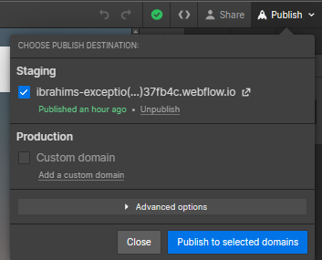
quick stack
quick stack is powerful grid element where you have more freedom
merging cells and doing all kinds of layouts
quick stack is basically a grid element with it's cells as divs set
to flex
for more info have a look at
webflow quick stack video